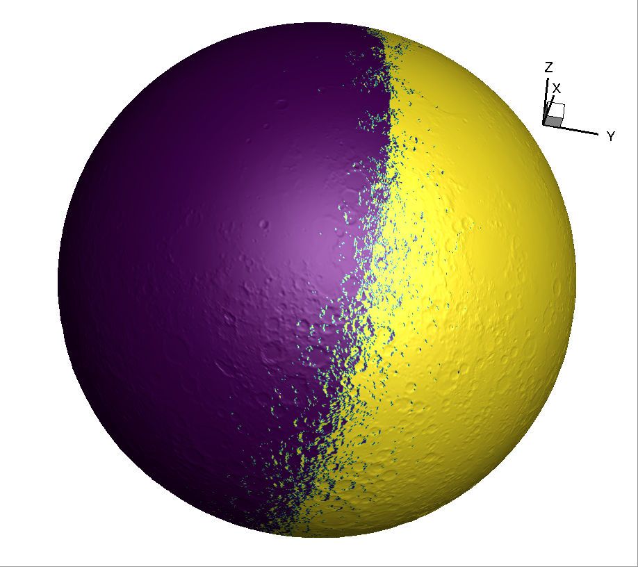

Research Overview
Focus:
Lunar exosphere modeling
Methods:
AMPS simulation, kinetic modeling
Key Element:
Sodium atoms as tracers
Applications:
Lunar exploration, space environment

Research Objectives
- Model the lunar exosphere (thin atmosphere where gas particles rarely collide)
- Identify gas sources and track their movement
- Study Earth's gravitational effects on the lunar sodium tail
- Support future lunar mission planning
Modeling Approach
- Direct Simulation Monte Carlo (DSMC) via Adaptive-Mesh-Particle-Simulator (AMPS)
- Tracks individual sodium atoms through their lifecycle
- Accounts for lunar rotation, orbital motion, and solar radiation pressure
- Uses specialized reference frame following the sodium tail
Key Findings
- Main Source: Photon-stimulated desorption (sunlight knocking atoms off surface)
- Release Rate: 1.68 × 1023 sodium atoms/second
- Primary Loss: Surface sticking (69% of atoms return to surface)
- Escape Rate: 5.3 × 1022 atoms/second
- Tail Properties: Atoms accelerate to 10-13 km/s; Earth's gravity creates observable concentration during new Moon
Future Research
- Time-dependent surface sodium reservoir dynamics
- Effects of Earth's magnetosphere on release rates
- Response to meteor showers and solar storms
- Modeling other species (potassium, argon, helium)
- Integration of LADEE, ARTEMIS, and LRO mission data
Modeled density distribution of sodium in the lunar exosphere and tail, showing Earth's gravitational focusing effect.
The complex orbital motion of the Moon creates a spiral-like trajectory that affects exospheric dynamics.

3D lunar topology model used in exosphere simulations, derived from LRO/LOLA laser altimeter observations.